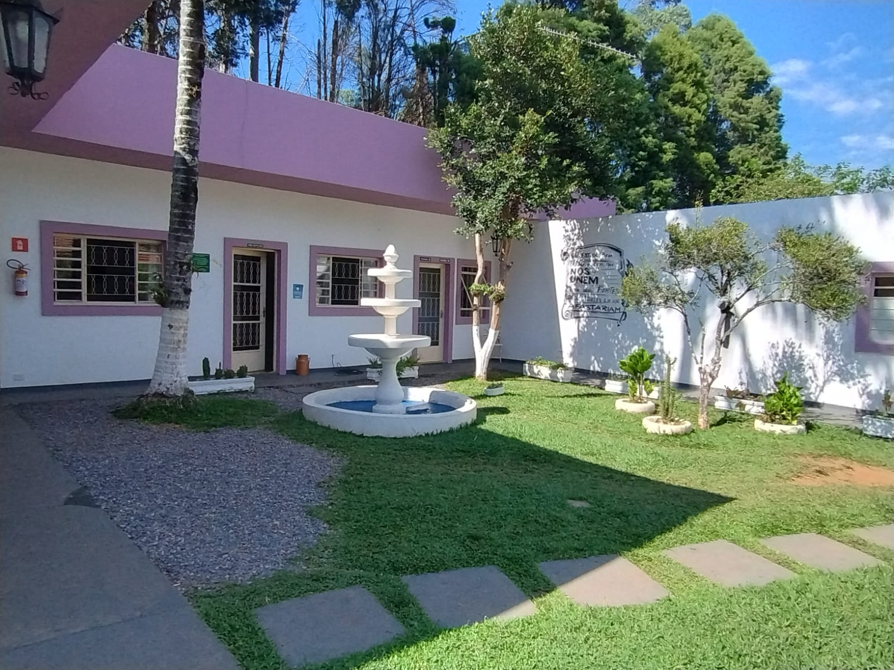
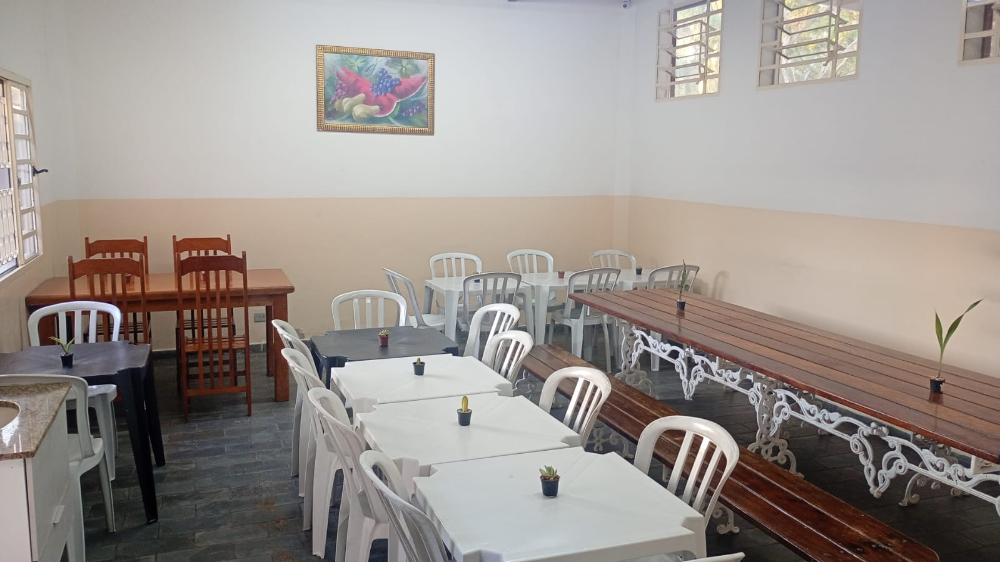
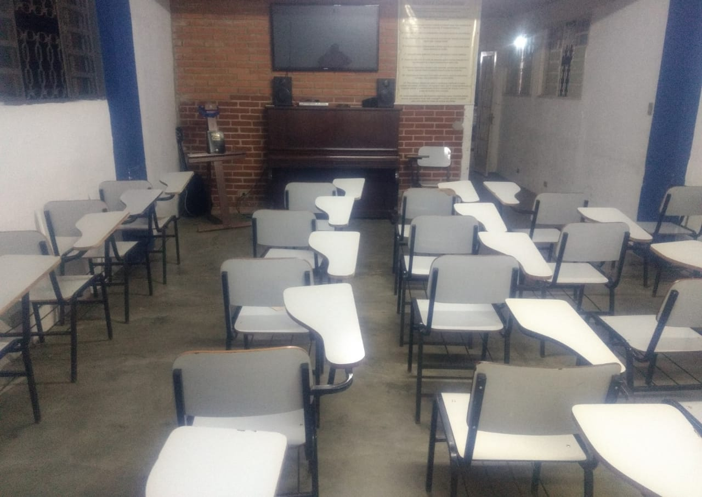
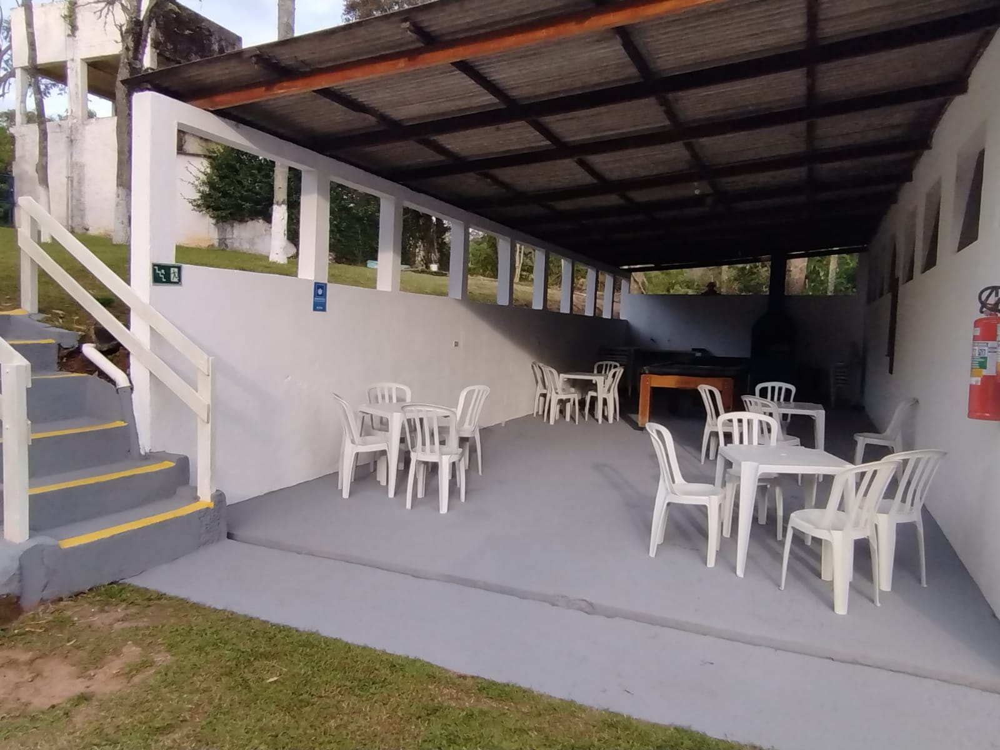
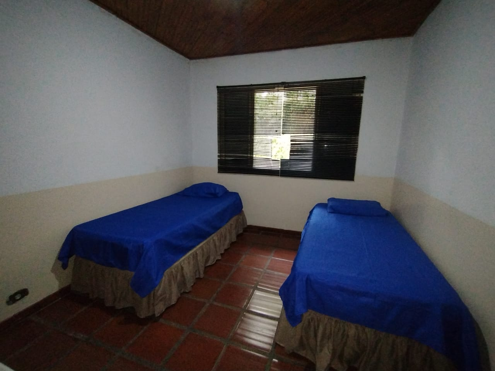
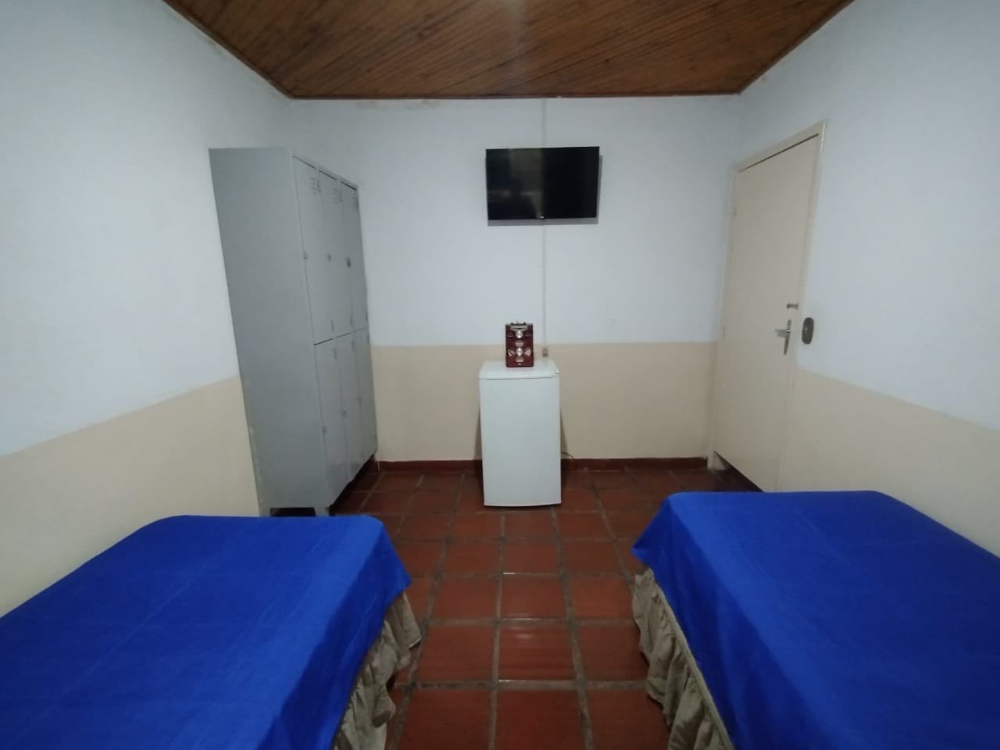
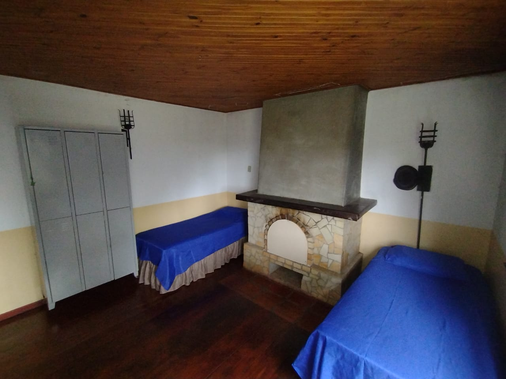
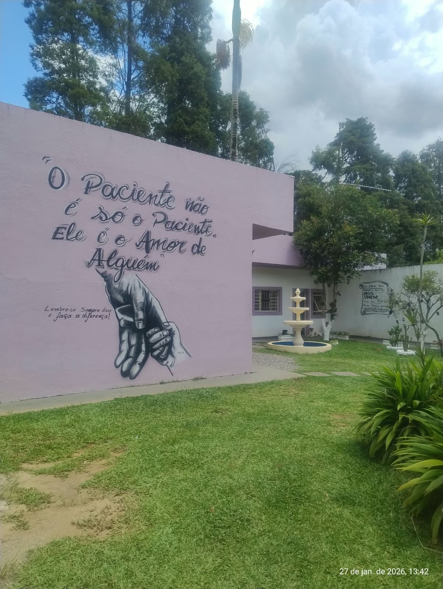
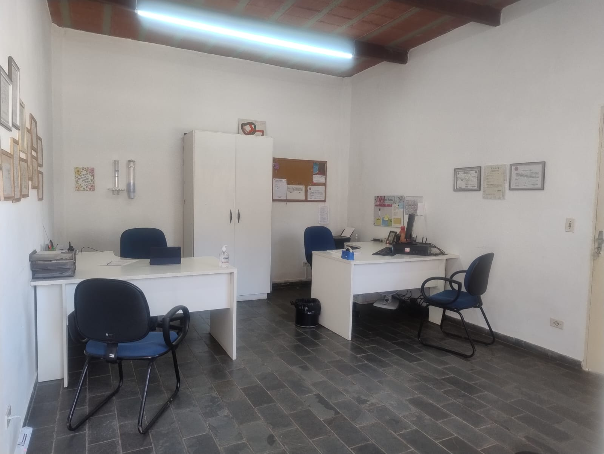

São Roque/SP · Unidade Masculina · Método Padrão
Clínica de Reabilitação Semear com Amor
“Nossa missão é oferecer um tratamento humanizado e proporcionar um novo estilo de vida para o paciente.”
Acolhemos homens que enfrentam a dependência de álcool e drogas em um ambiente seguro, cercado de natureza e cuidado, onde recomeçar é possível.


Sobre nós
A Semear com Amor é totalmente legalizada pelos órgãos públicos e está há 10 anos no mesmo endereço. É uma história construída com seriedade, transparência e respeito às famílias que confiam em nós.
Nossa abordagem tem base na espiritualidade, com seguimento bíblico, mas sem vínculo religioso: cada paciente é respeitado em sua fé e em suas escolhas.
Acomodações humanizadas
Não temos beliches. Todos os quartos são pensados para o conforto, acomodando 3 pacientes com camas baixas.
Nosso tratamento e metodologia
Um programa estruturado, com acompanhamento constante e terapias que cuidam da pessoa por inteiro.
Tempo de tratamento
- 3 meses
- 6 meses
- 9 meses
Monitoramento 24 horas, para total segurança do paciente durante toda a internação.
Terapias e reuniões
- Reuniões de 12 Passos
- Terapia Ocupacional
- Terapia Comportamental
- Terapia Emotiva
- Dinâmicas em grupo
- Atendimento individual
- Vídeo terapia
- Simulado AA e NA
- Palestras e reuniões

Nossa equipe multidisciplinar
Profissionais que trabalham juntos pela recuperação física, emocional e social de cada paciente.
Psiquiatra
Avaliação e acompanhamento médico.
Psicóloga
Atendimento semanal às terças-feiras.
Enfermagem
Técnica de enfermagem e enfermeira padrão.
Terapeuta especializado
Condução das terapias e do programa de recuperação.
Nutricionista
Acompanhamento 1 vez por semana.
Cozinheira
5 refeições diárias, no sistema self-service.
Ambiente Calmo e Confortável
Quartos confortáveis, salão de jogos, piscina e uma ampla área verde com espaço para atividades ao ar livre.












Informações para a família
Sabemos o quanto o contato importa. Estas são as regras de visita e comunicação.
Visitas presenciais
1 vez por mês. A primeira visita ocorre após 30 dias de internação.
Contato telefônico
Ligações aos sábados, após a primeira visita, com duração de 5 minutos por paciente.
Onde estamos
Em São Roque/SP, em meio à natureza, longe das influências que atrapalham a recuperação e perto do que ajuda a recomeçar.
Estrada do Paraíso - CangueraSão Roque - SP
CEP 18145-656 Como chegar
Você não precisa enfrentar isso sozinho
Fale com a nossa equipe. Explicamos como funciona o tratamento e tiramos todas as dúvidas, sem compromisso.
Estrada do Paraíso - Canguera, São Roque - SP, 18145-656